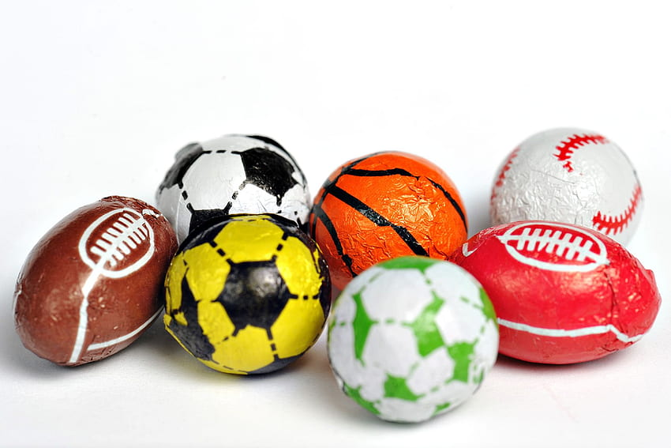

Physical Benefits of Sports First of all, Sports strengthen the heart. Regular Sports certainly make the heart stronger. Hence, Sport is an excellent preventive measure against heart diseases. This certainly increases the life expectancy of individuals. Furthermore, a healthy heart means a healthy blood pressure. Sports involve physical activity of the body. Due to this physical activity, blood vessels remain clean. Sports reduces the amount of cholesterol and fats in the body. This happens because of the increase of flexibility of the wall of the blood vessels. The flexibility increases due to physical exertion, which is the result of Sports. Furthermore, the sugar level in blood also gets lower thanks to Sports. The sugar certainly does not accumulate in the blood due to physical activity.
Sports in Emotional Development The need for sports is very important for mental and emotional development. If children grow up in a playful and cheerful environment from an early age, their minds will be high. To enhance the freshness and vitality of the mind sports play a vital role. Therefore, it is seen that children do not play with puppets and keep on with the elderly, and do not develop emotional health. Rather, they become presumptuous, unstable, and tempered. So, there is no way to neglect the necessity of sports for healthy mental and emotional development.
Sport is an eternal source of endless joy. It is through this joy that the mind and character of the human being arise. This character is the key to success in the struggle for future life. Training in sports is a balancing act for people. There is competition for success in the premises of life like our play, joy of victory and disappointment of defeat, and instantly the ability to accept it with a calm heart. Sports give the character of the man with determination, the concentration of competition, and on the other hand, tolerance of defeat, and generosity of heart.
Education is not just a promise of passing the test, not even a living thing, but the ground of mental exercise. With the touch of sports, education gets perfection, therefore, in the modern education system, sports draw more attention. If one of the goals of education is to develop a better life sense, then, the importance of sports is of paramount priority there. That’s why sports is important in our life for so many reasons what we think and even not think about.
